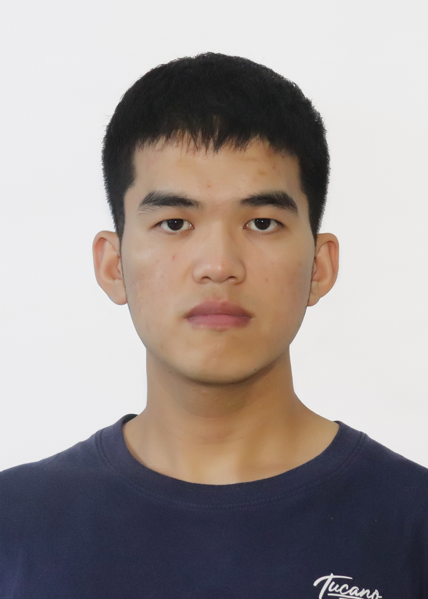

01
COMPUTER VISION · 2025
Industrial Vehicle
Video Analysis System
Built a real-time monitoring system for industrial vehicles with accurate detection, dynamic tracking and operation-state analysis.
View on GitHub ↗REMOTE SENSING · COMPUTER VISION · GIS
I build practical computer vision and geospatial intelligence solutions—from remote sensing interpretation to real-time video analysis and model deployment.

Open to opportunities
Remote Sensing · Computer Vision · Geospatial AI
PyTorch · YOLO · ByteTrack
OpenCV · Semantic Segmentation
Python · Docker · Kubernetes
RTSP · Model Deployment
Remote Sensing · GIS
Spatiotemporal Analysis
Engineering work with measurable, real-world applications.
COMPUTER VISION · 2025
Built a real-time monitoring system for industrial vehicles with accurate detection, dynamic tracking and operation-state analysis.
View on GitHub ↗GEOSPATIAL AI · 2024
Designed model deployment and land-use change analysis workflows for remote sensing interpretation and geospatial decision-making.
RESEARCH ENGINEERING · 2025
Developed a high-precision building extraction method for high-resolution remote sensing imagery.
Building Extraction Network based on High-resolution Remote Sensing Image · 2025
Impervious Surface and Surface Runoff Analysis · Sustainability, 2023
National Surveying Skills Competition · 2nd Prize
Esri Cup GIS Software Development Competition · 3rd Prize